La Geografía Detrás de la Elección Presidencial de 2026
Un análisis de un punto de inflexión para Costa Rica
Los comicios del pasado primero de febrero representaron un cambio difícil de dimensionar en el corto plazo. Por medio de dos tendencias claras, el aumento de la participación y la polarización en torno a la presidencia, los resultados arrojaron una señal de realineamiento político, a través del cual la segunda ronda ya no es un mecanismo necesario para la elección de mandatario en Costa Rica.
El Partido Liberación Nacional vuelve a ser el partido predominante en el Valle Central, imitando su rol durante la era bipartidista. El movimiento oficialista, abanderado en esta ocasión por Pueblo Soberano, por contraparte, imita el rol de los contendientes de Liberación Nacional durante esa era. A pesar de esto, una variedad de matices hace que el panorama nacional no sea tan simple como la tradicional dicotomía urbano-rural. A través de las cifras oficiales, se busca ir más allá de una comprensión binaria de la política y demostrar cómo son muchos los factores que marcan presencia al momento de decidir el voto.
I. Candidatos y bases territoriales
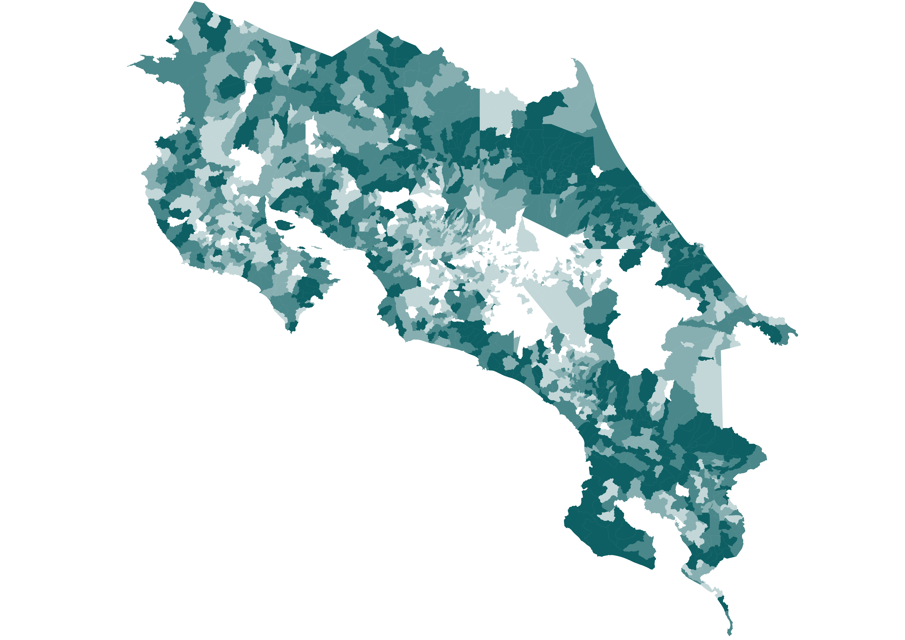
La candidata oficialista articuló un respaldo consistente en la mayor parte del territorio nacional. No obstante, su desempeño tuvo fisuras en territorios de mayoría indígena, particularmente en regiones como Valle La Estrella y Talamanca, donde su caudal se redujo de forma perceptible. Su mayor debilidad territorial, sin embargo, estuvo presente en cantones con fuerte dependencia del sector agropecuario, donde la politica cambiaria tuvo un rol fundamental.
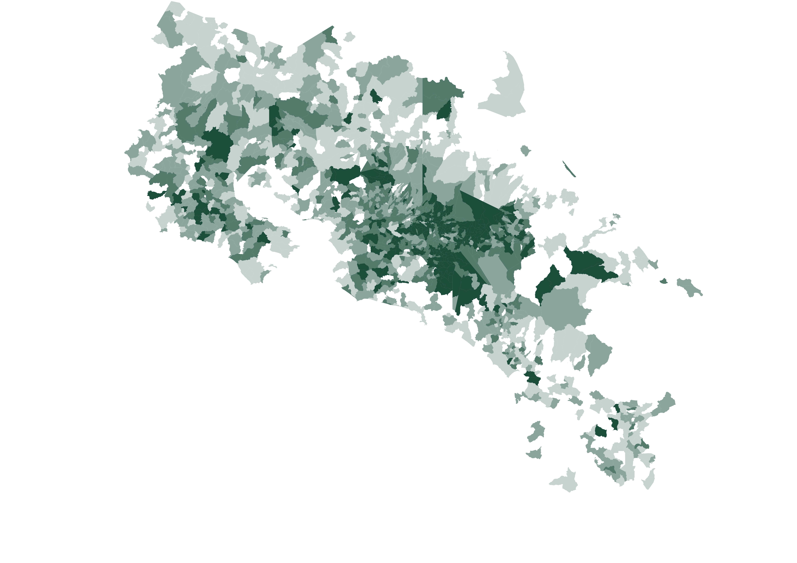
El liberacionismo reafirmó su arraigo de 2022 en los distritos más acomodados de la capital. Más allá de ese patrón ampliamente documentado, la candidatura de Álvaro Ramos también logró sostener nichos de respaldo en remanentes históricos del partido ubicados en la Península de Nicoya, Zarcero y la cordillera de Tilarán, así como en zonas agrícolas donde la propuesta oficialista fue rechazada. La votación en algunas de estas zonas, como Tierra Blanca, superó con creces incluso la presente en la capital.
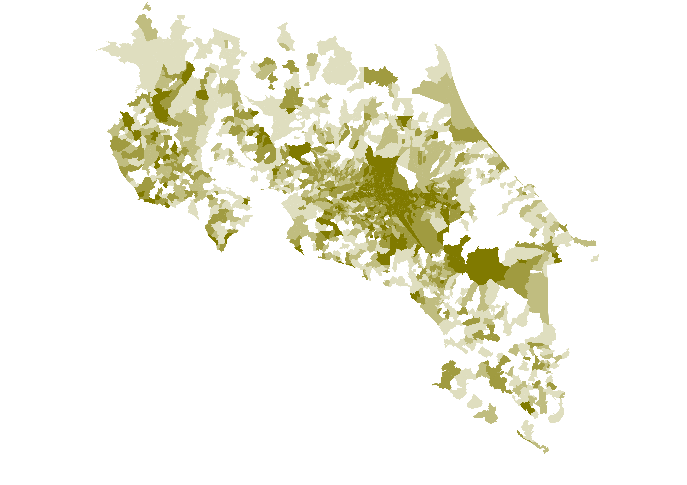
En el caso de Claudia Dobles, su base electoral se concentró de manera clara en el Valle Central, con especial énfasis en la provincia de Heredia. A ello se sumó un apoyo más reducido en Guanacaste. Este desempeño resulta llamativo al considerar la limitada estructura territorial de su partido, recordando la segunda elección de 2018, en la cual Guanacaste fue la única provincia costera donde se impuso su esposo.
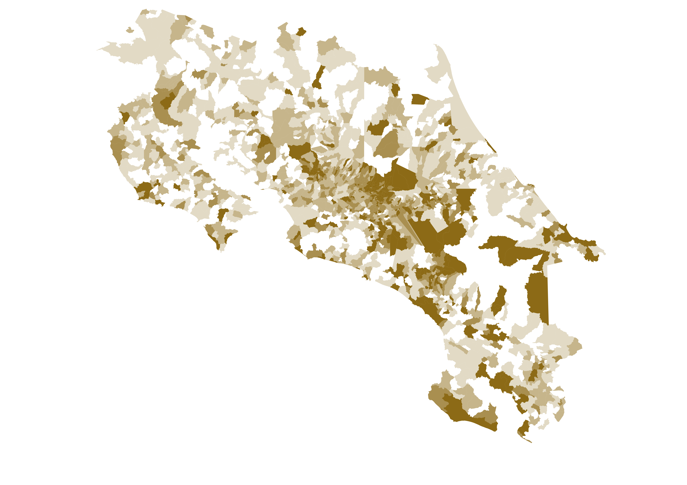
El exdiputado Ariel Robles presentó un patrón de apoyo más heterogéneo que el de Claudia Dobles, a pesar de también estar centrado en la Gran Área Metropolitana. Destaca su rendimiento en distritos costeros de Talamanca, donde su involucramiento en la controversia de Gandoca-Manzanillo pudo haber incidido en su posicionamiento. En términos generales, su votación mantuvo una distribución relativamente estable, sin grandes concentraciones territoriales.
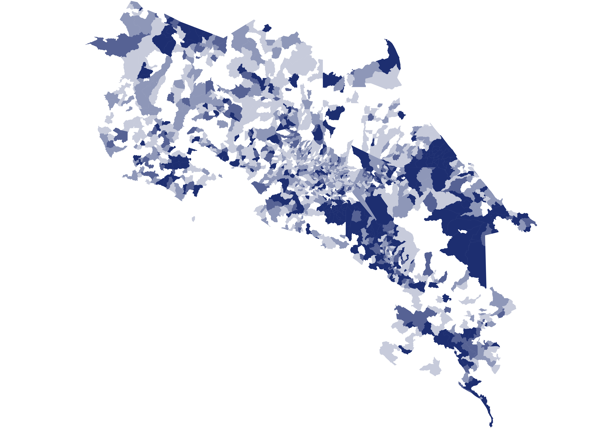
La candidatura de Juan Carlos Hidalgo mostró una inserción focalizada en distritos de altos indicadores socioeconómicos, llegando a superar a Lineth Saborío en algunos. También logró una limitada penetración en Matina, posiblemente influida por el respaldo explícito de su alcalde, y en la Zona de los Santos.
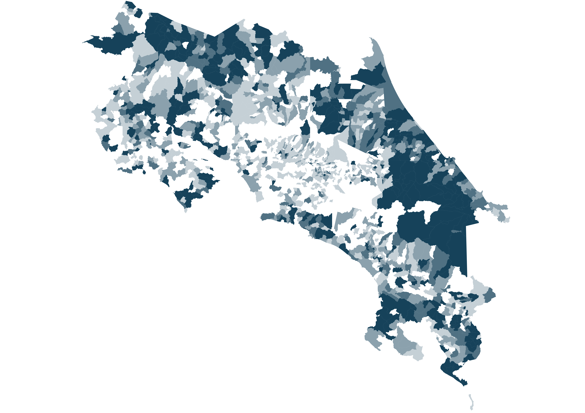
Fabricio Alvarado, en su tercer intento presidencial, no fue capaz de capitalizar el impulso de campañas anteriores debido al abandono de los dirigentes evangélicos en favor del oficialismo. A pesar de ello, conservó presencia en la Zona Norte, barrios urbano-marginales y ciertas comunidades indígenas, finalizando segundo en el distrito de Chirripó, en Turrialba.
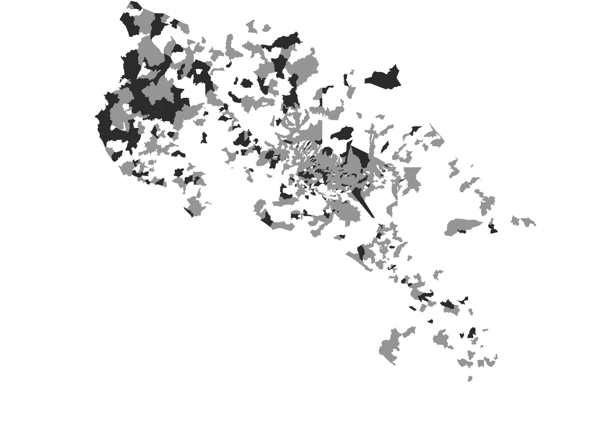
José Aguilar obtuvo un resultado de carácter disperso. Sin embargo, dentro de los escasos rasgos visibles, su apoyo tendió a concentrarse en los distritos adinerados del Gran Área Metropolitana, sobresaliendo también su desempeño en su cantón de origen, Santa Cruz, donde logró un nivel de votación superior al observado en el resto del país. Se dificulta inferir si su electorado extendido hubiera seguido un patrón similar.
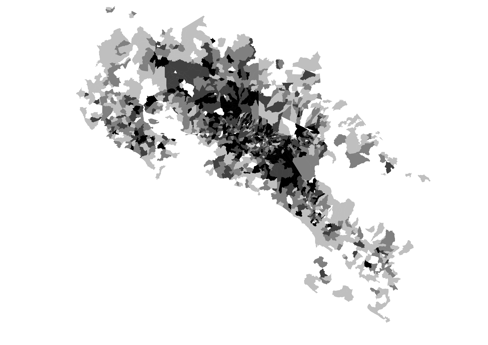
La participación, como ha sido usual en los procesos electorales anteriores, fue mayor en el Valle Central. Sin embargo, Occidente de Alajuela y la periferia de Cartago también registraron altas tasas de participación, evidenciando que esta también se ve afectada por elementos culturales difíciles de ocultar. Fue un cantón rural, Zarcero, en el cual el mayor porcentaje de electores acudió a las urnas.
II. Realineamiento y transformación electoral
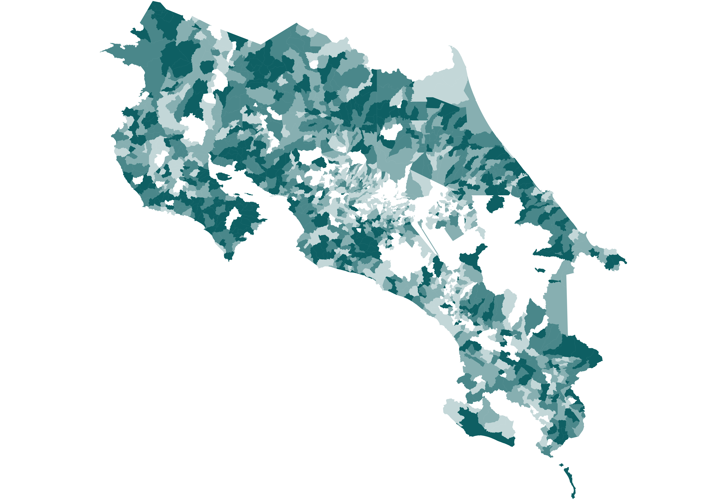
Comparado con la última ocasión en que estuvo en la papeleta, el oficialismo logró ampliar sustancialmente sus ganancias en regiones como la Península de Nicoya, la Zona Norte y Pococí. Por el contrario, en los suburbios de Heredia y en las regiones agropecuarias de Cartago tendió a perder votos en comparación con hace cuatro años. El realineamiento político actual muestra cómo un país ya polarizado electoralmente pasa a serlo en mayor medida, lo cual se relaciona con el impacto de las políticas identitarias a nivel nacional.
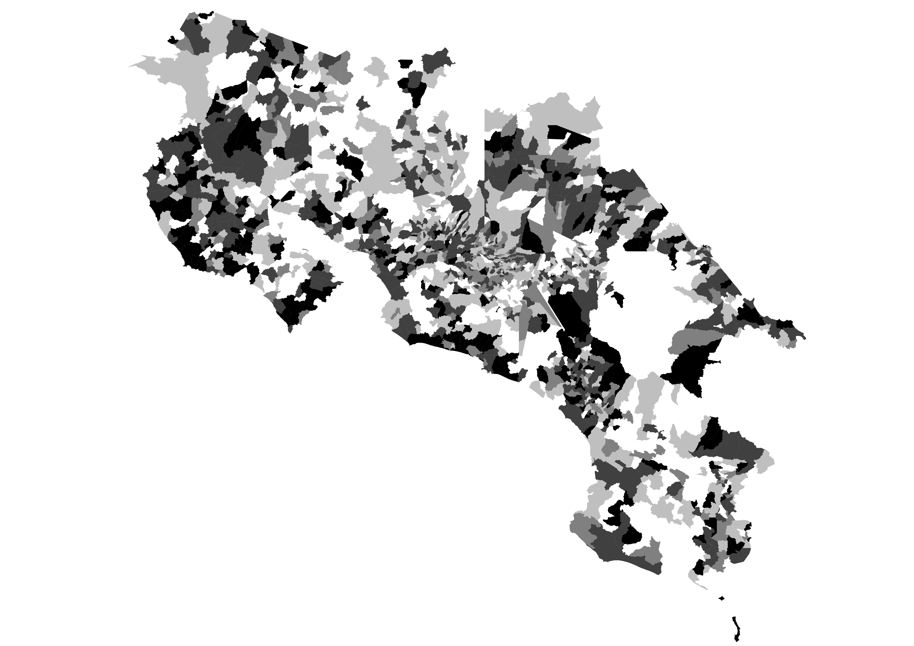
La participación en 2026 tampoco podría comprenderse enteramente sin una introspección hacia las tendencias previas. Si bien es cierto que el Valle Central fue el epicentro de la votación, no fue la razón de la reducción del abstencionismo. En ningún proceso electoral reciente la periferia había sido tan determinante para la política electoral. El fenómeno causado por la exitosa maquinaria periférica oficialista, mezclado con las mayores tasas de natalidad en las costas, genera un revés demográfico difícil de revertir para los contendientes del gobierno. La victoria de Laura Fernández fue posible en gran medida gracias a un electorado que raramente acudía a las urnas con anterioridad. Aunque la reducción del abstencionismo fue celebrada a través del espectro político, una única fuerza obtuvo más rédito de la misma.
III. Estudios de caso territoriales
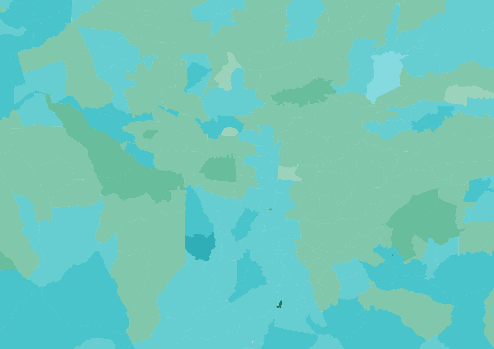
El triunfo de Laura Fernández marca la tercera vez desde la concepción del multipartidismo en la que un candidato emerge vencedor sin el consentimiento de la urbe. Álvaro Ramos logró márgenes históricos en distritos altamente desarrollados como Sánchez y San Rafael. Los llamados “barrios del sur” del cantón central y Alajuelita, sin embargo, le brindaron su respaldo al oficialismo, creando un corredor que separó al liberacionismo en dos.
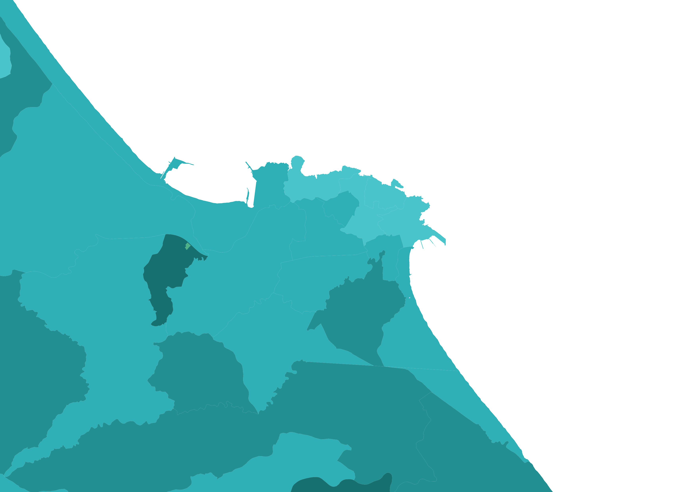
Puerto Limón fue holgadamente ganado por el oficialismo, despidiendo el dominio local del “fabricismo”. Como es usual en las regiones periféricas, las localidades con una mayor densidad poblacional se acercaron en mayor medida a los resultados del Valle Central.
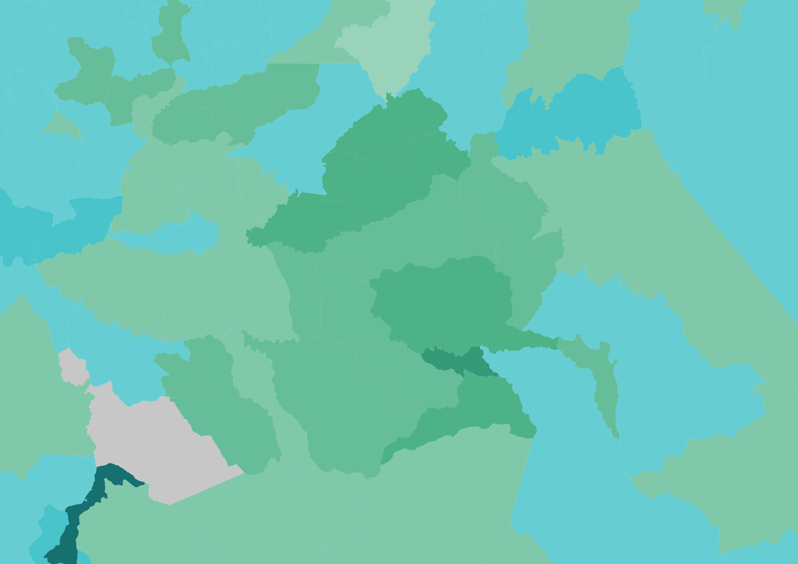
La Lucha y San Cristóbal, fieles al liberacionismo desde la Guerra Civil, le otorgaron nuevamente su apoyo. A pesar de esto, los márgenes de Álvaro Ramos aquí fueron limitados en comparación con comicios previos.
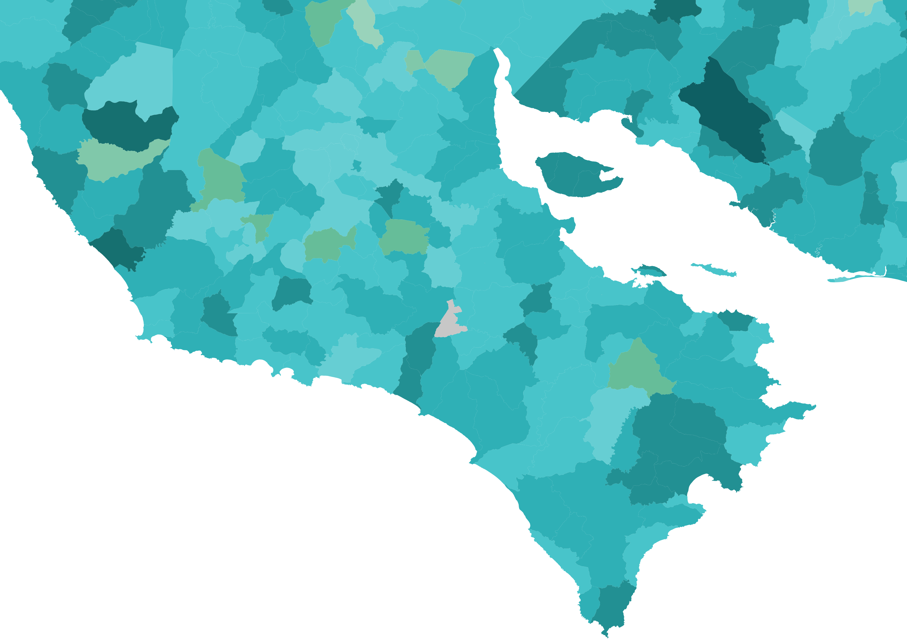
La Península de Nicoya, un bastión de Liberación Nacional a partir de la segunda presidencia Arias, se volteó hacia el gobierno y Pueblo Soberano, consolidando así una tendencia que ya había empezado en 2022.
Consulta interactiva de los resultados:
Notas sobre los datos: La participación en los centros penitenciarios podría resultar imprecisa debido a que su padrón está sujeto a cambios constantes. En el Hogar de Larga Estancia Fray Casiano de Madrid no se registraron votos en las juntas receptoras correspondientes.
Se agradece al usuario de X Timothy Hormigos (@bnstim) por proveer la plantilla para las ventanas emergentes del mapa interactivo.